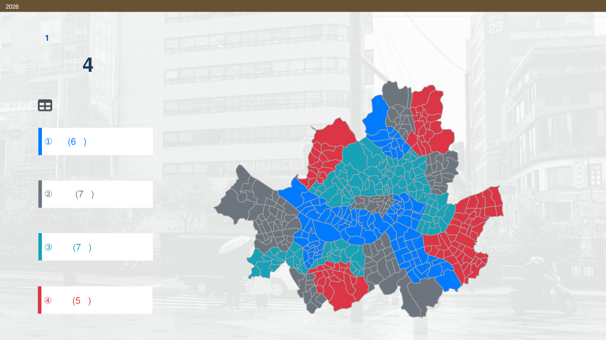

Python
Pandas, NumPy, Scikit-learn을 활용한 전처리, 탐색적 분석, 분류 모델링
Data Analyst Portfolio
통계적 사고를 바탕으로 문제를 정의하고, 데이터의 특성과 분석 목적에 맞는 기준을 선택해 결과를 실제 의사결정으로 연결합니다.
About
통계학을 전공하며 회귀분석, 확률론, 고차원자료분석 등 통계적 분석 방법을 공부했습니다. 실무와 프로젝트에서는 데이터 전처리부터 모델링, 결과 검토와 전달까지 분석의 전 과정을 경험했습니다.
높은 성능 수치 자체보다 무엇을 발견하고 어떻게 활용할 것인지를 중요하게 생각합니다. 고객 이탈 분석에서는 불균형 데이터에 맞춰 정확도에서 민감도로 평가의 초점을 넓혔고, 대출 승인 분석에서는 목표변수와 관련된 정보가 보존되는지를 기준으로 차원축소 방법을 비교했습니다.
Skills
데이터를 정리하고 모델을 구축한 뒤 결과를 해석하는 데 활용한 기술입니다.
Pandas, NumPy, Scikit-learn을 활용한 전처리, 탐색적 분석, 분류 모델링
회귀분석, 패널모형, 차원축소, 통계적 모델링과 결과 시각화
데이터 조회와 가공, JOIN, GROUP BY, 윈도우 함수 활용
통계 데이터 처리와 검증, 분석 결과 산출 및 정리
회귀분석, 로지스틱 회귀, 가설검정, 차원축소, 모델 평가
QGIS와 분석 도구를 활용한 공간 시각화, 결과표와 그래프 구성
Selected Projects
각 카드를 누르면 프로젝트별 상세 페이지에서 분석 과정, 결과, 기여도와 원본 자료를 확인할 수 있습니다.

01Urban Data Analysis
소비전환 수준과 유동·소비 동조성을 지표화해 상권을 네 유형으로 분류하고, 정책 우선지역과 강수 대응 전략을 제안했습니다.
프로젝트 자세히 보기 02
02
 03
03
High-dimensional Data
범주형 변수를 포함한 고차원 데이터에서 PCA와 MD-SDR을 비교해 대출 승인과 관련된 정보를 더 잘 보존하는 방법을 검토했습니다.
프로젝트 자세히 보기Experience
WORK EXPERIENCE
분석계획서에 따른 데이터 분석, 동료와의 결과 교차 검토, 고객사 커뮤니케이션, 인턴과 신규 구성원 교육을 경험했습니다.
EDUCATION
회귀분석, 확률론, 데이터마이닝, 고차원자료분석을 학습하고 금융·공공 데이터를 활용한 프로젝트를 수행했습니다.
CAMPUS EXPERIENCE
교수와 교직원 요청을 조율하며 수업 운영, 성적 관리 보조, 자료 정리와 안내 업무를 수행했습니다.
프로젝트 상세 페이지에서 분석 결과와 보고서, 발표자료, 코드를 확인할 수 있습니다.